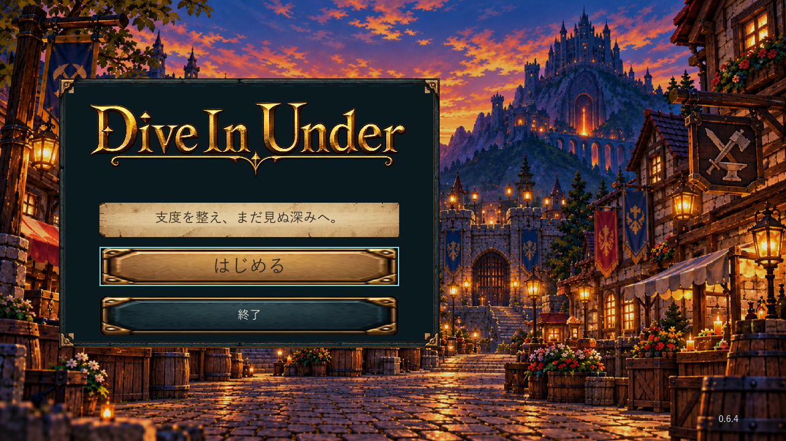
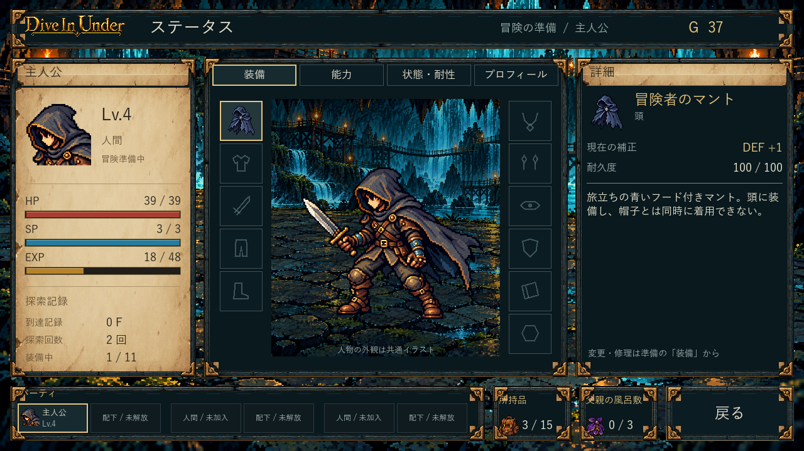

採用ロゴを全通常画面へ統一。11装備枠・濃紺マント・説明と数値の見せ方を整理。Spaceで自動戦闘の停止／再開、ボタンでの再開も可能です。
タイトルはカタカナを削除し、ロゴ・説明・開始・終了を一つの左パネルへ。右側の城と町、背景だけ黒12%を維持しています。

最終の隔離EXEは約18秒の対象確認を通過。こちらのPCではゲームを起動していません。見た目の最終評価は未評価です。

配布先と旧版の保管 / 旧0.6.3